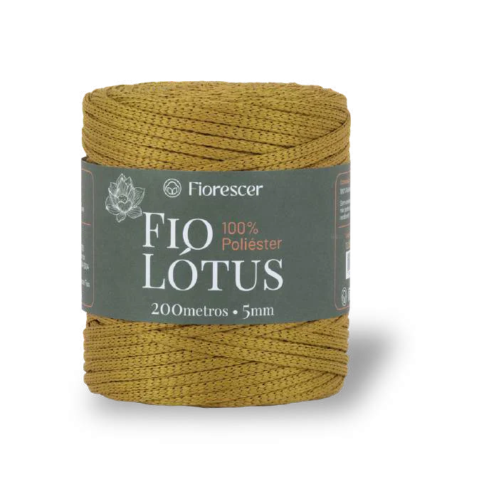
O que você vê quando olha para um fio?
Do fio à ideia
O fio é o ponto de partida. O que vem depois é de quem cria: a cor escolhida, o ponto que se repete, a peça que ninguém mais tem.
A Fiorescer não vende apenas fios.
Vende possibilidades para criar.
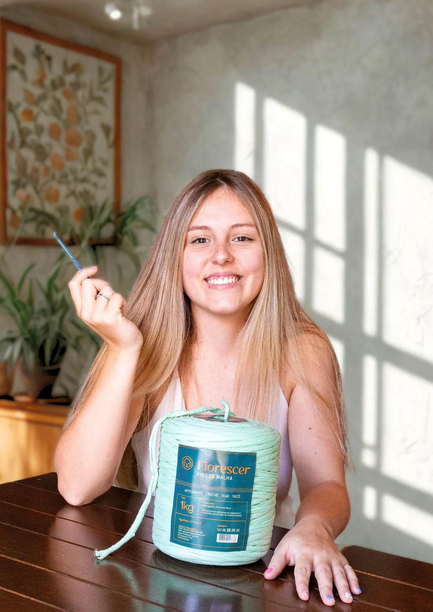
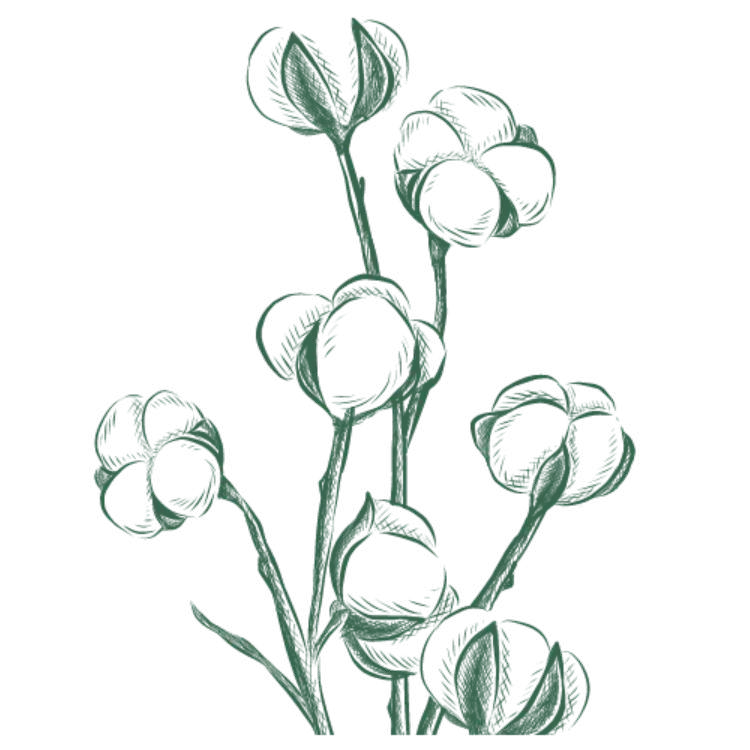
Capítulo 01
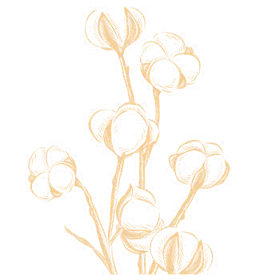
Capítulo 02 · Sobre nós
Criada em 2002 pelo grupo Voss Têxtil, somos especializados na coleta e no reaproveitamento de materiais provenientes de indústrias têxteis. O que antes seria descartado, transformamos em fios de alta qualidade, prontos para ganhar novas formas nas mãos de quem cria.
Além dos fios residuais, a Fiorescer também conta com linhas desenvolvidas para atender diferentes necessidades de criação, como o fio Lótus. Embora não seja produzido a partir de material reciclado, ele segue o mesmo padrão de qualidade, cuidado e compromisso com a excelência presente em todos os nossos produtos.
Ao longo de mais de duas décadas, a Fiorescer construiu uma trajetória marcada pela qualidade, pela responsabilidade ambiental e pela confiança de quem transforma fios em criações únicas.
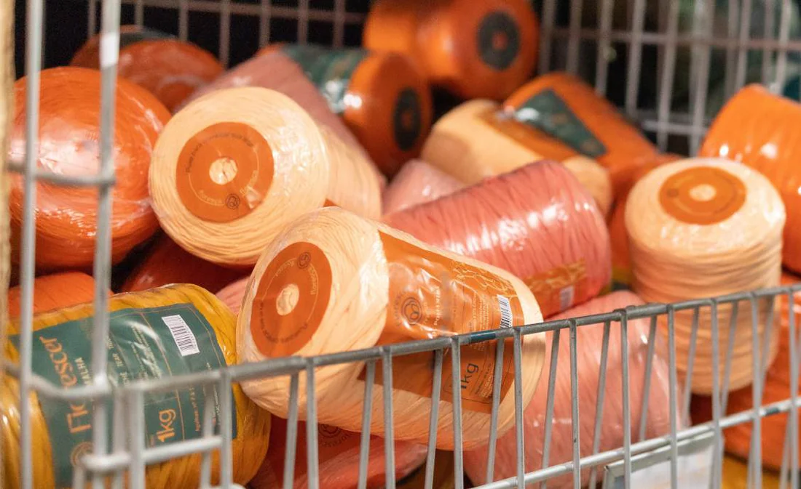
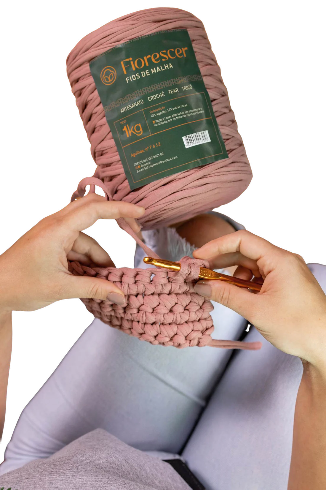
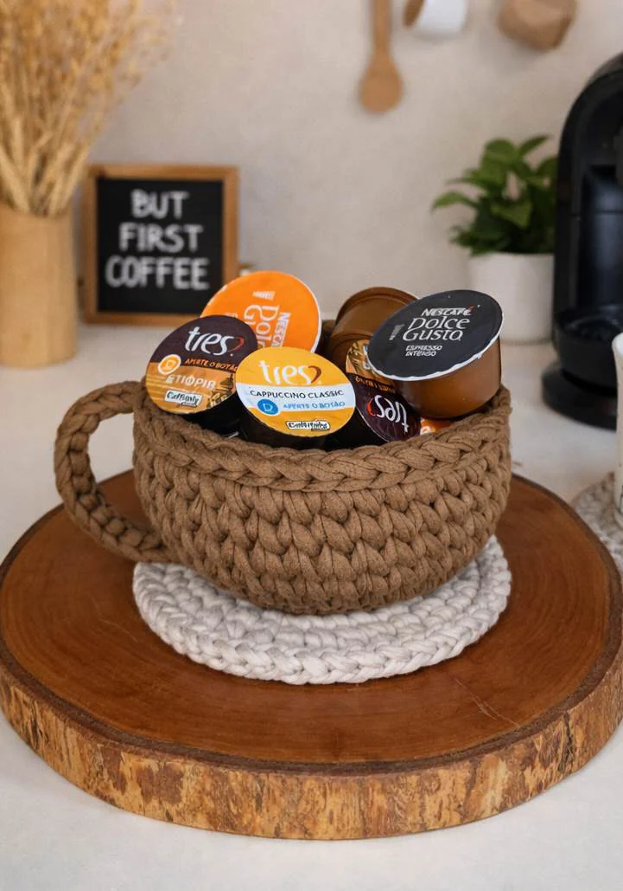
Capítulo 03 · Nossos fios
Cada linha existe para um tipo de projeto. Deslize para ver o que cada fio faz de melhor e escolha pelo que você quer criar.
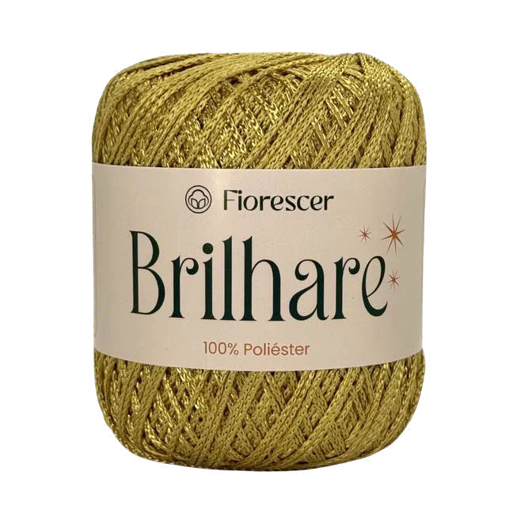
Fino e com brilho delicado: é o fio para quando o acabamento precisa aparecer sem pesar na peça.
Venda em múltiplos de 6 · 6 cores coringa
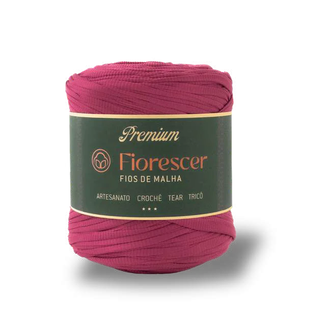
Espessura uniforme do início ao fim: crocheta os 140 metros sem emenda nem variação.
Formato rolotê · lavável, mantém cor e brilho
5 mm de espessura e 200 metros por rolo: dá estrutura para bolsas e cestos que precisam manter a forma.
21 cores fixas · maciez e ótimo rendimento
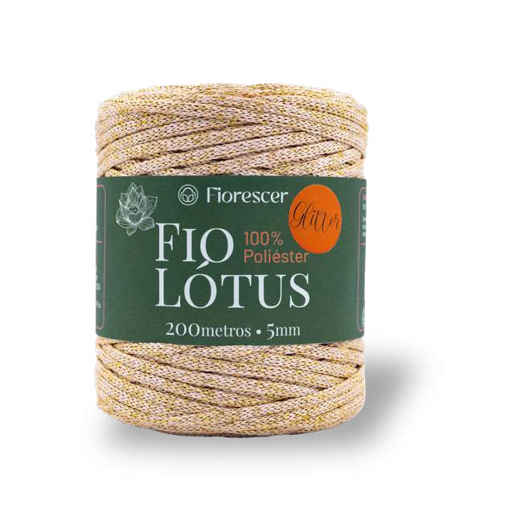
O mesmo Lótus, com lurex: o brilho aparece na peça inteira, não só quando a luz bate.
6 cores com brilho de lurex
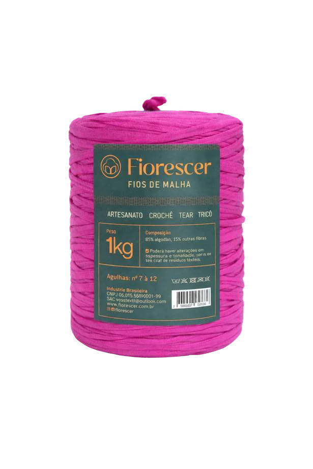
1 kg de malha reaproveitada: o melhor custo-benefício para tapetes, cestos e peças grandes.
Mais de 30 tons · venda por categoria
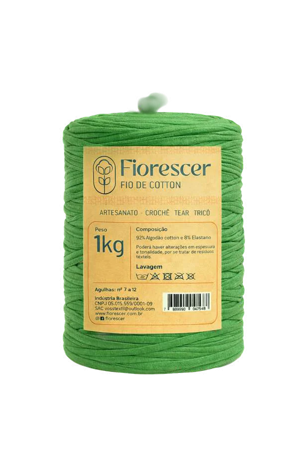
Algodão com elastano: cede enquanto você crocheta e devolve estrutura quando a peça está pronta.
Mais de 30 tons · elasticidade garantida
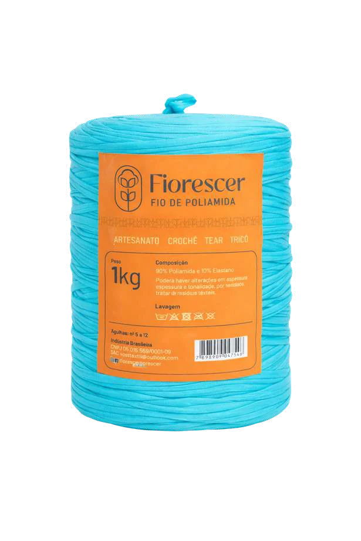
Quando a cor precisa ser intensa: elasticidade alta e os tons mais vibrantes da casa.
Mais de 20 tons · abertura especial no rolo
Arraste para o lado
Capítulo 04 · Qualidade
Nossa embalagem com abertura central permite usar o fio diretamente do rolo, com mais praticidade e organização.
Além de proteger o fio contra sujeiras, facilita o transporte e garante um uso mais funcional no dia a dia.
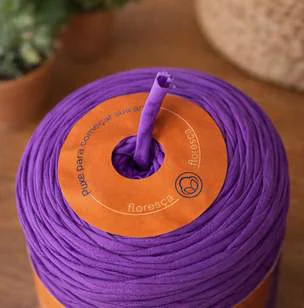
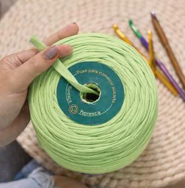
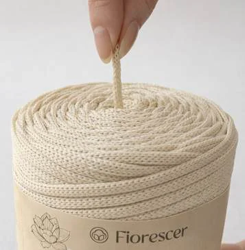
Aplicamos um processo cuidadoso na fabricação dos fios residuais, buscando o mínimo de avarias e a maior uniformidade possível de espessura ao longo de todo o comprimento do rolo.
Nosso compromisso é oferecer fios de alta qualidade, desenvolvidos para estimular a criatividade e valorizar cada projeto artesanal, do início ao acabamento final.
Opções para diferentes aplicações, mantendo um padrão consistente de qualidade, cuidado e confiabilidade para quem cria e para quem revende.
Capítulo 05 · Revenda
Trabalhamos com quem transforma fio em negócio. Condições de atacado, margem previsível e o portfólio completo à disposição da sua loja.
Time próximo, que conhece o produto e responde rápido, antes e depois da compra.
Produto que a artesã procura pelo nome. Marca conhecida gira mais rápido na prateleira.
Margem clara e preço de atacado estável, para você montar sua tabela sem surpresa.
Desde 2002 reaproveitando resíduo têxtil. Fomos os primeiros e seguimos aprimorando.
Seleção e revisão criteriosa rolo a rolo, para minimizar emendas e variação de espessura.
Fio residual de alto rendimento: mais metros por real investido, do rolo à peça pronta.
Atendemos lojas, ateliês e distribuidores em todo o Brasil.